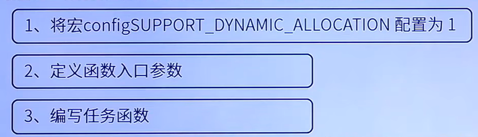
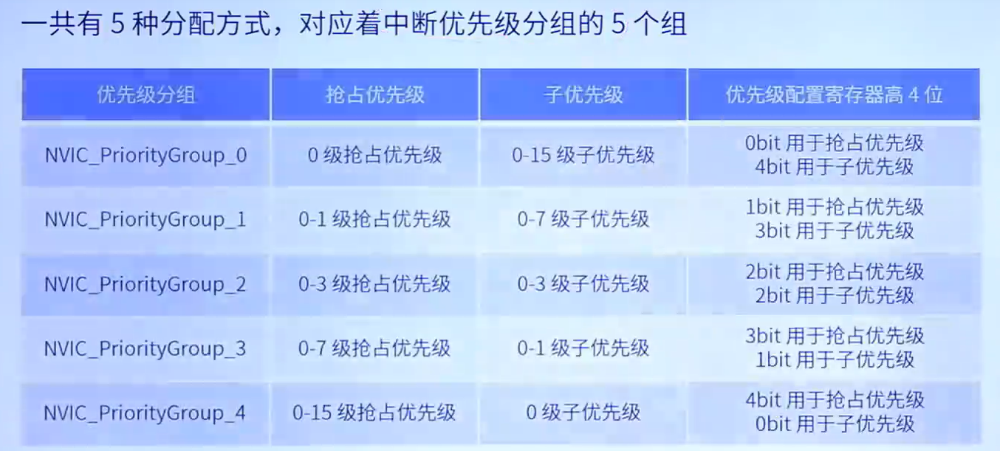
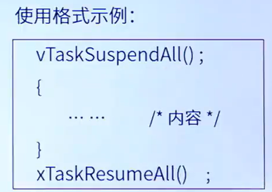

第9讲 任务的创建
一.创建任务
1.动态创建任务 xTaskCreate() 任务的任务控制块以及任务的栈空间所需的内存，均由FreeRTos从管理的堆中分配
2.静态创建任务 xTaskCreateStatic() 任务的任务控制块以及任务的栈空间所需的内存，需由用户分配
3.删除任务 vTaskDelete()
动态创建函数

实现动态创建任务流程

二.任务挂起与恢复
第13讲 任务挂起与恢复
第13讲 任务挂起和恢复函数介绍_哔哩哔哩_bilibili
宏配置在freeRTOSConfig.h 文件中
| API函数 | 描述 | 函数介绍 | 宏配置 |
|---|---|---|---|
| vTaskSuspend() | 挂起任务 | void vTaskSuspend(TaskHandle_t xTaskToSuspend),传入NULL，则挂起自身 | 将宏INCLUDE_vTaskSuspend配置为1 |
| vTaskResume() | 恢复被挂起的任务 | void vTaskResume(TaskHandle_t xTaskToResume) | 将宏INCLUDE_vTaskSuspend配置为1 |
| xTaskResumeFromISR() | 在中断中恢复被挂起的任务 | void xTaskResumeFromISR(TaskHandle_t xTaskToResume),返回值为pdTure，任务恢复后需要进行切换。返回值为pdFALSE，任务恢复后不需要进行切换 | 将宏INCLUDE_vTaskSuspend和INCLUDE_XTaskResumeFromISR配置为1 |
任务优先级： FreeRtos管理 5-15，数值越大优先级越高
中断优先级(NVIC)： ARM内核管理 ,数值越小优先级越高
关于FreeRTOS与STM32优先级的详解
第一层：神仙打架区（优先级 0 - 4） 含义：最高优先级范围。 特点：FreeRTOS 管不了它们，也屏蔽不了它们。 规则：绝对禁止在这里面的中断服务函数（ISR）里调用任何 FreeRTOS 的 API！ 应用场景：极度要求实时的功能。比如电机控制的过流保护、最高速的 ADC 采样。哪怕系统正在处理复杂的任务调度，这些中断也能瞬间响应，完全不受操作系统影响。
第二层：FreeRTOS 托管区（优先级 5 - 14）—— 老师说的就是这里 含义：中等优先级范围。 特点：这些中断可以被 FreeRTOS 的“临界区”机制屏蔽（Mask）。 规则：可以安全地调用以 FromISR 结尾的 API 函数（如 xQueueSendFromISR）。 原理：当 FreeRTOS 需要保护核心数据结构时，它会把 CPU 的中断屏蔽寄存器（BASEPRI）设为 5。这意味着，优先级在 5 到 15 的中断暂时会被“关”在外面，直到 FreeRTOS 处理完数据。
第三层：内核地板区（优先级 15） 含义：最低优先级。 谁在这里：FreeRTOS 的 PendSV（任务切换）和 SysTick（时钟节拍）。 规则：这是内核干活的地方。
第14讲 任务挂起与恢复实验

注意事项：1.在启动RTOS之前，通过调用NVIC_PriorityGroupConfig(NVIC_PriorityGroup_4);来确保所以优先级位分配为抢占优先级位
2.中断处理函数的抢占优先级要小于或等于freeRtos所管理的最大优先级（5-15）
第15讲 任务挂起与恢复函数实现的详细过程
1.任务挂起流程图 vTaskSuspend()

2.任务恢复函数详情 vTaskResume()

3.xTaskResumeFromISR()

三.中断管理简介 第16讲
简介
ARM Cortex-M 使用8位宽的寄存器来配置中断的优先级，这个寄存器就是中断优先级配置寄存器
但STM32，只用了中断优先级配置寄存器的高4位[7:4],所以STM32提供了最大16级的中断优先等级
stm32的中断优先级分为抢占优先级与响应优先级、

抢占优先级相同的，不能相互抢占
中断优先级分组

中断优先级分组设置
1.低于FreeRtos所管理的最高优先级的 中断里 才允许调用FreeRtos的API函数
2.所有优先级位指定为抢占优先级位，方便FreeRtos管理
3.中断优先级值越小，越优先
中断相关寄存器
三个系统中断优先级配置寄存器
分别为SHPR1,SHPR2,SHPR3
| 寄存器 | 地址 |
|---|---|
| SHPR | 0xE000ED18 - 0xE000ED1B |
| SHPR2 | 0xE000ED1C - 0xE000ED1F |
| SHPR3 | 0xE000ED20 - 0xE000ED23 |
PendSV寄存器地址 0xE000ED22 设置最低优先级15 处理任务切换
SysTick寄存器地址 0xE000ED23 设置最低优先级15
保证系统任务切换不会阻塞系统其他中断的响应
三个中断屏蔽寄存器
分别为PRIMASK,FAULTMASK,ABSEPRI
FreeRtos中断管理就是利用BASEPRI寄存器实现的

BASEPRI设置为 0x50 左移4位前为0x05，所以中断优先级大于或等于5的均被屏蔽

四.临界段代码保护
临界区：必须完整运行，不能被打断的代码段
适用场合：1.外设初始化
2.系统自身
3.用户需求
| 描述 | 函数 |
|---|---|
| 任务进入临界段 | taskENTER_CRITICAL() |
| 任务退出临界段 | taskEXIT_CRITICAL() |
| 中断级进入临界段 | taskENTER_CRITICAL_FROM_ISR() |
| 中断级退出临界段 | taskEXIT_CRITICAL_FROM_ISR() |
五.任务调度器的挂起和恢复
| 函数 | 描述 |
|---|---|
| vTaskSuspendAll() | 挂起任务调度器 |
| xTaskResumeAll() | 恢复任务调度器 |

1.与临界区的不同是：挂起任务调度器，未关闭中断。
2.仅防止任务间的资源争夺
3.不用担心延时/延误中断处理函数